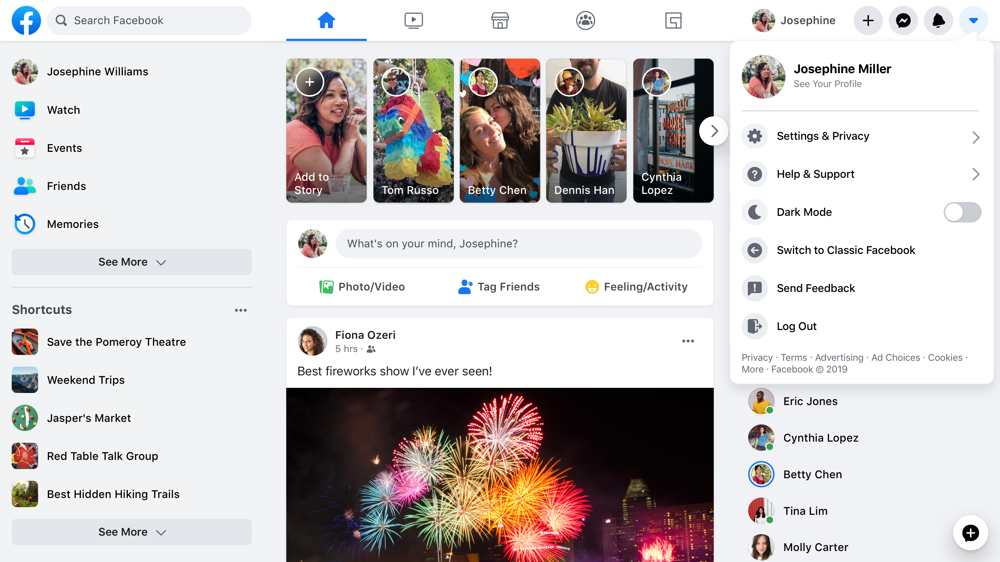
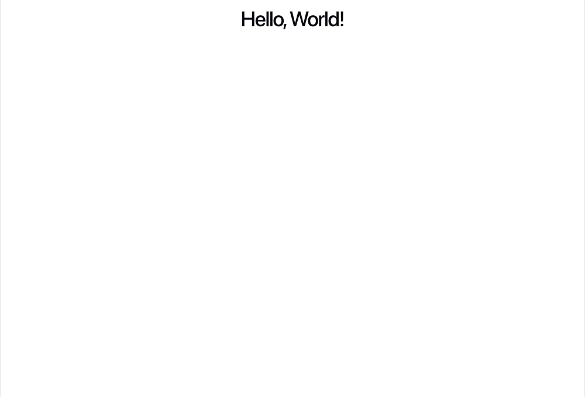
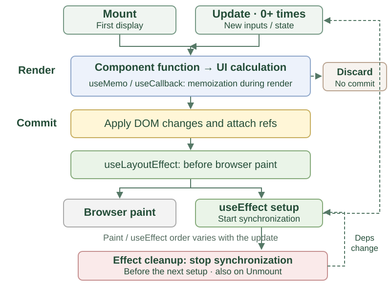
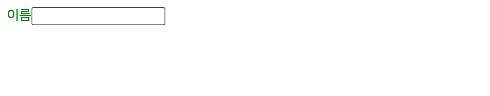
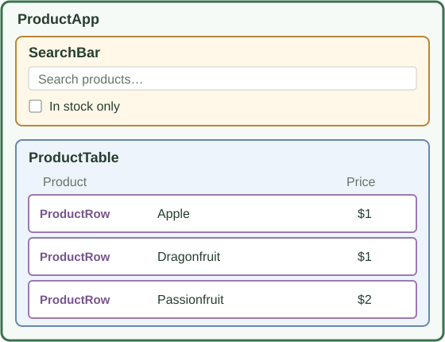
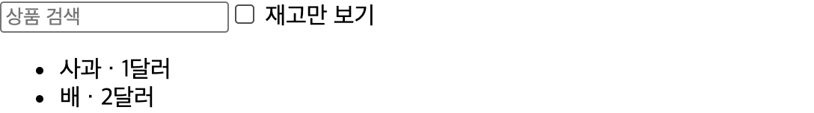
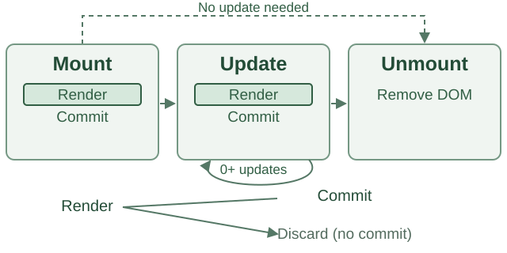
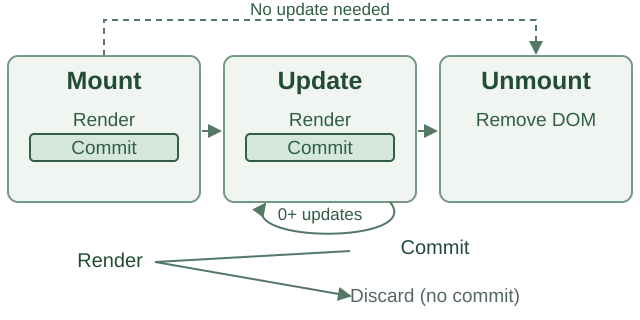
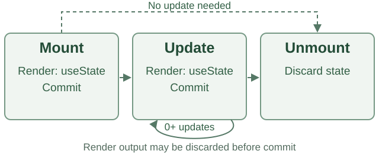
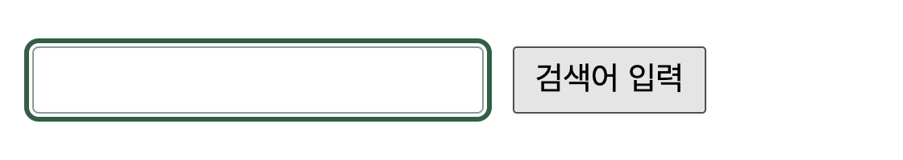

2026학년도 2학기 실전웹서비스개발
실전 웹서비스개발 – 5주차
React Framework의 이해
LECTURE 05
React 기초
React의 등장 배경·UI 설계 철학
LECTURE 04
React 등장 배경
React의 등장 배경
데이터 변화에 맞춰 화면을 직접 수정하고 일치를 유지해야 했던 문제
기존의 DOM 직접 수정 방식
- 문제 - 화면 수정 책임이 개발 코드 곳곳에 분산
- 데이터가 바뀔 때마다 DOM과의 일치를 직접 유지
- React의 제안(2013) - 현재 데이터에 맞는 화면을 기술
- React = re(다시) + act(작동): 바뀐 데이터에 맞는 화면을 다시 기술
- 컴포넌트가 데이터에 따른 화면을 반환
- React가 이전 결과와 비교해 필요한 DOM 변경을 반영
React의 역할
데이터에 맞는 웹 서비스 화면을 구성하는 JavaScript 라이브러리
웹 서비스 안에서의 위치
서버 · 데이터베이스
요청 처리 · 공유 데이터 저장
브라우저
React
컴포넌트로 UI 계산 · 변경 반영
DOM · CSS
문서 구조 · 스타일 · 화면 표시
Facebook.com 재설계
React UI와 CSS·코드 로딩·데이터·탐색 구조의 변화

- CSS - 스타일과 다크 모드
- 원자적 CSS로 홈 화면 CSS 80% 축소 · 변수로 테마 전환
- JavaScript - 필요한 코드부터
- 첫 화면 표시와 이후 기능에 맞춰 코드를 3단계로 분리
- 데이터 - Relay · GraphQL
- 필요한 데이터를 미리 요청 · 피드 항목을 순차 전달
- 탐색 - 다음 화면 준비
- 이동할 화면의 코드 · 데이터를 미리 가져와 전환 지연 감소
React의 발전 과정
React 사용 현황
2025 Stack Overflow · 전문 개발자
React를 사용하는 서비스
아이콘을 선택해 새 탭에서 실제 서비스 화면 살펴보기

React의 UI 설계 철학
화면의 구성 요소·재사용·데이터와 표현의 관계
React UI 설계 철학
화면을 컴포넌트로 구성하고, 현재 데이터와 상태에 따른 모습을 선언
- 컴포넌트 - 화면을 나누어 조합하는 UI 단위
- 예 - 검색창 · 상품 목록 · 상품 행
- 상태 - 컴포넌트가 기억하고 갱신하는 값
- 예 - 검색어 · 재고만 보기 선택 여부
상태 변경 → 관련 컴포넌트의 UI 재계산 → 조합된 페이지에 반영
컴포넌트 기반 화면 구성
상품 검색 화면의 컴포넌트 경계와 포함 관계
- ProductApp - 상품 검색 화면 전체
- SearchBar와 ProductTable을 조합
- SearchBar - 검색 조건 입력
- 상품명 입력 · 재고 조건 선택
- ProductTable - 결과 목록 표시
- 분류별 상품 · 검색 결과 개수
- ProductRow ×6 - 상품 한 행의 반복
- 각 행에 상품명 · 가격 · 재고 여부 표시
컴포넌트의 재사용과 일관성
ProductRow 하나로 여섯 상품 행을 표시
- ProductRow - 같은 UI 정의를 여섯 번 사용
- 사과 $1 · 용과 $1 · 패션프루트 $2 등 서로 다른 상품 데이터
- 표시 규칙 - 모든 상품 행에 공통 적용
- 상품명 - 왼쪽
- 가격 - 오른쪽
- 품절 - 색상 · 문구로 구분
- 재사용의 효과 - 한 곳의 표시 규칙을 모든 행에 적용
- ProductRow 수정 → 여섯 상품 행에 함께 반영
데이터 변화와 화면 표현
재고 조건 선택 → 품절 2개 제외 → 결과 6개 → 4개
명령형과 선언형 프로그래밍
클릭 카운터로 비교하는 DOM 직접 수정과 UI 선언
- 명령형 - 작업의 순서와 방법을 직접 지정
- jQuery - 버튼을 만들고 클릭 이벤트를 연결
- 클릭 후 button.text(...)로 화면의 텍스트를 직접 수정
- 선언형 - 원하는 결과의 조건이나 형태를 정의
- React - 현재 count에 맞는 버튼 UI를 기술
- 클릭 후 setCount(...)로 상태 변경 · React가 화면 갱신
jQuery · DOM 직접 수정
let count = 0;
const button = $('<button>').appendTo(host);
button.text(`Clicked ${count} times`);
button.on('click', () => {
count += 1;
button.text(`Clicked ${count} times`);
});count 증가 → button.text(...) 호출
React · 상태에 따른 UI
function Counter() {
const [count, setCount] = useState(0);
return (
<button onClick={() => setCount(count + 1)}>
Clicked {count} times
</button>
);
}setCount(...) 호출 → 현재 count에 맞는 버튼 UI
React UI 설계 방식의 확장
React의 컴포넌트 기반·선언형 UI 접근은 다른 UI 프레임워크 설계에도 영향
- React Native - React의 UI 모델을 모바일 앱에 적용
- 컴포넌트와 상태 개념을 iOS · Android 개발에 활용
- Flutter - React에서 영감을 받은 UI 설계
- 공식 문서에서 위젯 · 상태에 따른 선언형 화면 구성을 설명
React의 화면 갱신
Virtual DOM의 개념과 화면 갱신 구조
Virtual DOM이란?
실제 DOM과 구분되는 메모리의 UI 표현
- DOM - 브라우저가 관리하는 실제 문서 구조
- 화면의 요소 · 텍스트 · 속성을 담는 노드
- Virtual DOM - 원하는 UI를 나타내는 메모리의 표현
- React가 현재 UI와 다음 UI를 대조할 때 사용하는 개념적 모델
- 화면 표시 - 최종 변경은 실제 DOM에 반영
- 브라우저는 갱신된 DOM을 바탕으로 화면 표시
DOM 직접 갱신과 React의 차이
재고 조건 변경 시 검색 결과 6개 → 4개
같은 재고 필터 변경 · 검색 결과 6개 → 4개
차이 - 실제 DOM 사용 여부가 아니라 변경할 요소를 결정하는 책임
React의 화면 갱신 과정
상태 변경 → UI 계산·대조 → DOM 반영
- Trigger상태 변경
- RenderUI 계산·대조
- CommitDOM 변경
- Browser화면 표시
- ① Trigger - 재고 조건 상태 변경
- 「재고 있는 상품만」 선택
- ② Render - 새 UI 계산과 이전 결과 대조
- 컴포넌트 실행 · 결과 4개와 상품 행 구성 계산
- ③ Commit - 필요한 DOM 변경 반영
- 품절 행 2개 제거 · 결과 개수 6 → 4
- ④ Browser - 갱신된 화면 표시
- DOM 변경 후 브라우저가 화면을 그림
Virtual DOM의 효과와 한계
갱신 책임의 분리와 계산 비용
- 효과 - UI 정의와 DOM 갱신 책임 분리
- 개발자는 상태에 맞는 화면을 기술 · React가 필요한 변경을 반영
- 장점 - 변경 범위 관리와 기존 요소 유지
- 차이가 없는 DOM 노드는 유지 · 복잡한 화면의 갱신 코드 감소
- 비용 - UI 계산과 대조 작업
- 메모리의 UI 표현 · 컴포넌트 재실행에 필요한 작업량
- 한계 - 성능 우위는 자동으로 보장되지 않음
- 단순한 직접 갱신이 더 적은 작업일 수 있음 · 실제 속도는 측정으로 판단
프로젝트 셋업과 Hello World
개발 환경에서 첫 React 화면까지의 실행 흐름
React 개발 환경과 도구
Node.js·npm·Vite의 역할과 실행 환경 확인
개발 도구의 역할
터미널 · 설치 확인
node -v npm -v
- 실행 조건 - Vite 가이드의 Node.js 버전 요구사항
- Node.js 20.19+ 또는 22.12+
- 템플릿의 추가 버전 조건 확인
React 프로젝트 생성과 실행
Vite 대화형 메뉴의 선택 항목과 프로젝트 구성
터미널 · 실제 선택 로그
$ npm create vite@latest ◇ Project name: │ pwd-week5-demo ◇ Select a framework: │ React ◇ Select a variant: │ TypeScript ◇ Which linter to use? │ ESLint ◇ Install with npm and start now? │ No └ Done. Now run: cd pwd-week5-demo npm install npm run dev
No 선택 후: cd로 폴더 이동 → npm install로 패키지 설치 → npm run dev로 개발 서버 실행. 접속 주소는 터미널의 Local 출력 확인.
- Project name - pwd-week5-demo
- 프로젝트 폴더 이름 - 생성할 소스와 설정 파일을 담는 디렉터리
- Select a framework - React
- UI 라이브러리 선택 - React 개발에 필요한 기본 소스와 의존 패키지 구성
- Select a variant - TypeScript
- 소스 언어 선택 - 타입을 검사하는 TypeScript 기반 템플릿
- Which linter to use? - ESLint
- 코드 검사 도구 선택 - 코드 규칙 위반과 잠재 오류를 찾는 ESLint 설정
- Install with npm and start now? - No
- 자동 설치·실행 생략 - 생성 후 패키지 설치와 개발 서버 실행을 직접 수행
Hello, World! 출력
App.tsx로 정의하는 첫 React 화면
src/App.tsx · 파일 전체를 아래 코드로 교체
export default function App() {
return <h1>Hello, World!</h1>;
}
02
컴포넌트와 JSX
함수 컴포넌트에서 시작해 상품 목록 화면을 구성하는 방법
함수 컴포넌트
UI를 계산하고 반환하는 함수의 구조
- 함수 컴포넌트 - UI를 반환하는 JavaScript 함수
- 컴포넌트 이름은 대문자로 시작하는 함수 이름
- 함수 본문은 표시할 UI를 계산하는 영역
- return은 계산한 UI를 반환하는 구문
- 다른 컴포넌트는 이 이름을 태그로 사용해 UI 배치
- React는 태그에 대응하는 함수를 호출해 반환된 UI로 화면 구성
React · src/App.tsx
function ProductTitle() {
return <h2>상품 목록</h2>;
}
export default function App() {
return (
<section>
<ProductTitle />
<p>사과</p>
</section>
);
}클래스 방식 · ProductTitle.tsx
import { Component } from 'react';
export default class ProductTitle extends Component {
render() {
return <h2>상품 목록</h2>;
}
}함수 컴포넌트 사용 권장 - Hooks로 상태 관련 로직을 쉽게 분리·재사용
함수 컴포넌트 생명주기
UI 계산·DOM 반영·외부 동기화로 이어지는 함수 컴포넌트의 처리 흐름
- 컴포넌트 생명주기 - 첫 표시·업데이트·제거에 따른 처리 흐름
- Mount는 첫 표시, Update는 새로운 입력·내부 값에 따른 UI 재계산
- Render는 컴포넌트 함수를 실행해 UI 계산 · 결과 폐기 가능
- Commit은 선택한 계산 결과를 DOM·참조에 반영
- Effect는 외부 동기화 시작 · 의존성이 바뀌면 이전 작업 정리 후 재시작
- Unmount는 화면 제거 · 남아 있는 동기화 작업 정리
- Update는 0회 이상 반복 · 같은 계산 결과에는 DOM 변경 없음

JSX
JavaScript 코드 안에서 화면 구조를 표현하는 문법
- JSX - JavaScript 안에서 작성하는 UI 구조
- JavaScript 안에서 XML과 유사한 태그로 UI 구조를 표현하는 문법
- return 뒤의 JSX로 화면에 표시할 요소 정의
- 태그의 중첩으로 화면 요소의 포함 관계 표현
- 빌드 도구가 브라우저에서 실행할 JavaScript로 변환
React · ProductTitle.tsx
export default function ProductTitle() {
return (
<section>
<h2>상품 목록</h2>
<p>사과</p>
</section>
);
}JSX의 표현식
중괄호 안의 JavaScript 계산 결과를 화면에 넣는 방법
- 중괄호 - JSX 안에 JavaScript 표현식을 넣는 표기
- 변수 참조와 계산 결과를 요소의 내용으로 사용
- if·for 같은 문장은 중괄호 안의 표현식으로 사용 불가
React · ProductPrice.tsx
export default function ProductPrice() {
const name = '사과';
const price = 1000;
const quantity = 2;
return (
<p>
{name} · {price * quantity}원
</p>
);
}사용 불가 · if·for 문장 직접 삽입
<p>{if (true) { '사과' }}</p>
<ul>{for (let i = 0; i < 3; i++) {
<li>사과</li>
}}</ul>사용 가능 · 조건은 삼항 연산자, 반복은 map()
<p>{true ? '사과' : '품절'}</p>
<ul>{[1, 2, 3].map(id => (
<li key={id}>사과</li>
))}</ul>JSX 태그 작성 규칙
요소를 빠짐없이 닫고 중첩 구조를 맞추는 규칙
- 태그 구조 - 닫는 태그와 올바른 포함 관계
- 내용이 있는 요소는 시작·종료 태그를 쌍으로 작성
- 내용이 없는 요소도 JSX에서는 명시적으로 닫기
| 작성 대상 | JSX 표기 | 확인할 규칙 |
|---|---|---|
| 문구 | <p>상품명</p> | 시작·종료 태그의 이름 일치 |
| 입력 요소 | <input /> | 자식이 없으면 자체 닫기 |
| 중첩 요소 | <section><h2>상품</h2></section> | 안쪽 요소를 먼저 닫기 |
JSX 속성
JavaScript 방식의 속성 이름과 값으로 요소를 설정하는 방법
- JSX 속성 - 이름과 값으로 요소를 설정하는 방식
- 문자열은 따옴표, JavaScript 값은 중괄호로 전달
- className - 요소에 적용할 CSS 클래스 이름 지정
- htmlFor - label을 같은 id의 입력 요소와 연결
- maxLength={40} - 숫자로 최대 입력 길이 지정
- style={{ color: 'green' }} - 객체로 CSS 속성 전달
React · NameField.tsx
export default function NameField() {
return (
<div className="field">
<label htmlFor="name" style={{ color: 'green' }}>
이름
</label>
<input id="name" type="text" maxLength={40} />
</div>
);
}
Fragment
추가 DOM 요소 없이 여러 형제 요소를 묶는 구조
- Fragment - 추가 DOM 요소 없이 여러 JSX 요소를 묶는 구조
- 여러 JSX 요소를 함께 반환할 때 하나의 묶음으로 구성
- <>...</>는 Fragment의 축약 표기
- 묶음 안의 요소만 DOM에 생성하며 형제 관계 유지
- div와 달리 감싸는 DOM 요소를 추가하지 않음
- 불필요한 묶음 없이 각 요소를 바로 배치
React · ProductSummary.tsx
export default function ProductSummary() {
return (
<>
<h2>사과</h2>
<p>1000원</p>
</>
);
}생성된 DOM · 감싸는 요소 없이 형제 요소만 유지
<h2>사과</h2> <p>1000원</p>
Props
컴포넌트에 전달하는 입력 데이터
- Props - 컴포넌트에 전달하는 입력 데이터
- App에서 ProductName에 pName 값으로 상품명 전달
- ProductName은 전달받은 값을 직접 변경하지 않고 UI 계산에 사용
- 기본값은 값이 없거나 undefined인 경우 적용
React · App.tsx
type Props = { pName?: string };
function ProductName({ pName = '상품' }: Props) {
return <p>{pName}</p>;
}
export default function App() {
return (
<section>
<ProductName pName="사과" />
<ProductName pName="용과" />
<ProductName />
</section>
);
}실행 결과
사과
용과
상품
컴포넌트 분리
역할을 명확히 나누고 재사용·조합하기 쉬운 UI 구성
- 설계 원칙 - 책임을 나누고 재사용·조합하기 쉬운 UI 구성
- 단일 책임: 하나의 컴포넌트는 하나의 역할에 집중
- 재사용성: 여러 곳에서 같은 컴포넌트를 사용하도록 설계
- 조합 가능성: 작은 컴포넌트를 조합해 전체 화면 구성

| 분리 기준 | 판단할 상황 |
|---|---|
| 재사용 | 같은 UI를 여러 곳에서 사용해야 할 때 |
| 복잡도 | 한 컴포넌트의 역할·로직이 복잡해질 때 |
| 성능 | 화면 일부를 따로 최적화할 필요가 있을 때 |
| 테스트 | 특정 UI·동작을 독립적으로 검증하고 싶을 때 |
컴포넌트 파일 분리
분리한 컴포넌트를 export와 import로 연결하는 방법
- 파일 분리 - export와 import로 연결하는 컴포넌트
- export - 다른 파일에서 사용할 수 있도록 함수·변수·타입 등을 내보내는 예약어
- import - 다른 파일에서 내보낸 함수·변수·타입 등을 가져오는 예약어
React · src/ProductRow.tsx
export type Product = {
id: string;
name: string;
price: number;
stocked: boolean;
};
type RowProps = { product: Product };
export default function ProductRow({
product
}: RowProps) {
return (
<tr>
<td>{product.name}</td>
<td>{product.price}달러</td>
</tr>
);
}React · src/App.tsx
import ProductRow from './ProductRow';
const apple = {
id: 'apple',
name: '사과',
price: 1,
stocked: true
};
export default function App() {
return (
<table>
<tbody>
<ProductRow product={apple} />
</tbody>
</table>
);
}children
컴포넌트 태그 사이의 내용을 내부에 배치하는 Props
- children - 컴포넌트 태그 사이의 내용을 받는 Props
- 태그 사이에 넣은 JSX·텍스트 등을 children으로 전달
- 컴포넌트 내부의 {children} 위치에 전달받은 내용 표시
- 공통 화면 틀을 재사용하면서 내부 내용은 사용하는 곳에서 지정
- 내용이 바뀌어도 화면 틀 코드를 다시 작성할 필요 없음
React · App.tsx
import type { ReactNode } from 'react';
type PanelProps = { children: ReactNode };
function ProductPanel({ children }: PanelProps) {
return <section>{children}</section>;
}
export default function App() {
return (
<ProductPanel>
<h2>상품 목록</h2>
<p>이름과 가격</p>
</ProductPanel>
);
}조건부 렌더링
조건의 결과에 따라 표시할 UI를 선택하는 방법
- 조건부 렌더링 - 조건에 따른 UI 선택
- 데이터나 사용자 상태에 맞는 내용 표시
- 필요한 요소만 표시하고 불필요한 요소는 숨김
- 하나의 컴포넌트로 여러 상황에 맞는 화면 구성
React · ProductRow.tsx / product는 부모가 전달
export type Product = {
id: string;
name: string;
price: number;
stocked: boolean;
};
type RowProps = { product: Product };
export default function ProductRow({ product }: RowProps) {
const { name, stocked } = product;
const label = stocked ? name : name + ' (품절)';
return (
<tr>
<td>{label}</td>
<td>{product.price}달러</td>
</tr>
);
}목록 렌더링
map으로 배열의 각 데이터를 반복되는 UI 요소로 표현하는 방법
- 목록 렌더링 - 배열의 각 데이터를 같은 형태의 UI로 표시
- map으로 각 데이터를 UI 요소로 변환해 순서대로 표시
- 항목마다 같은 UI 코드를 반복 작성할 필요 없음
- 배열의 항목 수에 맞춰 목록을 자동으로 구성
React · src/App.tsx
const products = [
{ id: 'apple', pName: '사과' },
{ id: 'pear', pName: '배' }
];
export default function App() {
return (
<section>
{products.map((item) => (
<p key={item.id}>{item.pName}</p>
))}
</section>
);
}실행 결과
사과
배
목록 항목의 key
목록 변경 전후에 같은 항목을 식별하는 기준
- key - React가 목록의 각 항목을 식별하는 값
- 같은 목록 안에서 고유하고 변하지 않는 ID 사용
- 항목의 추가·삭제·순서 변경 전후에 같은 항목을 연결
- 입력값·상태가 다른 항목과 뒤섞이지 않도록 유지
- React가 사용하는 특수 Props로, 컴포넌트 내부에서 직접 읽을 수 없음
React · src/App.tsx
const products = [
{ id: 'apple', pName: '사과' },
{ id: 'pear', pName: '배' }
];
export default function App() {
return (
<ul>
{products.map((product) => (
<li key={product.id}>{product.pName}</li>
))}
</ul>
);
}상품 목록의 정적 구현
사용자 동작을 연결하기 전에 화면 구조와 내용을 완성하는 단계
- 정적 구현 - 사용자 동작을 연결하기 전 화면을 완성하는 단계
- 화면에 필요한 요소와 배치를 먼저 구성
- 화면 구조와 표시 내용을 미리 확인하고 수정 가능
- 화면 구성과 동작 구현을 나눠 개발 복잡도 감소
- 입력란·체크박스를 조작해도 목록을 바꾸는 기능은 아직 연결하지 않음
React · src/App.tsx
export default function App() {
return (
<main>
<input placeholder="상품 검색" />
<label>
<input type="checkbox" /> 재고만 보기
</label>
<ul>
<li>사과 · 1달러</li>
<li>배 · 2달러</li>
</ul>
</main>
);
}
03
상태 기반 화면 갱신
사용자 입력에 따라 컴포넌트의 화면을 변경하는 원리
이벤트 핸들러
사용자 행동이 발생했을 때 실행할 함수를 연결하는 방법
- 이벤트 핸들러 - 사용자 행동이 발생할 때 실행되는 함수
- 클릭·입력 같은 이벤트에 실행할 함수를 연결
- 사용자 행동에 반응하는 상호작용 구현
- 화면 구조와 동작을 처리하는 로직을 구분해 관리
React · AddButton.jsx
export default function AddButton() {
function handleClick() {
alert('상품을 선택했습니다');
}
return <button onClick={handleClick}>상품 선택</button>;
}| 상황 | 대표 핸들러 | 구체적인 사례 |
|---|---|---|
| 클릭 | onClick | 버튼을 눌러 상품 선택 |
| 마우스 진입·이탈 | onMouseEnter · onMouseLeave | 마우스 포인터가 요소 안으로 들어오거나 밖으로 나감 |
| 키보드 입력 | onKeyDown · onKeyUp | 키를 누르거나 뗌 |
| 포커스 이동 | onFocus · onBlur | 입력란을 선택하거나 다른 곳으로 이동 |
| 입력값 변경 | onChange | 검색어 수정·체크박스 선택 변경 |
| 폼 제출 | onSubmit | 제출 버튼이나 Enter로 폼 제출 |
State
useState로 컴포넌트가 기억할 값을 관리하는 방법
const [state, setState] = useState(initialState);
- useState - 함수 컴포넌트에 상태를 추가하는 React 함수
- initialState: 처음 화면을 만들 때 사용할 초깃값
- state: 반환 배열의 첫 번째 항목인 현재 상태 값
- setState: 반환 배열의 두 번째 항목인 상태 변경 함수
- [state, setState]: 배열 구조 분해로 두 반환값을 순서대로 받는 문법
- 변수 이름은 직접 정하며 두 항목의 역할은 순서로 결정
- setState(다음 값) 호출로 다음 상태와 화면 갱신 요청
React · Quantity.jsx
import { useState } from 'react';
export default function Quantity() {
const [quantity, setQuantity] = useState(1);
return (
<button onClick={() => setQuantity(quantity + 1)}>
수량: {quantity}
</button>
);
}실행 결과
수량: 1 → 클릭 → 수량: 2 → 클릭 → 수량: 3
Render
현재 입력과 상태를 바탕으로 다음 UI를 계산하는 단계
- Render - 현재 값으로 다음 UI를 계산하는 단계
- 컴포넌트 함수를 실행해 현재 Props·State에 맞는 JSX 계산
- Mount에서는 첫 UI 계산, Update에서는 현재 값으로 UI 다시 계산
- Render 결과는 폐기될 수 있으며, 실제 반영할 결과만 Commit으로 전달
- 계산 결과가 같으면 DOM 변경 없음
- 같은 입력에는 같은 결과 반환 · Render 중 외부 데이터 변경 금지
React · Quantity.jsx
import { useState } from 'react';
export default function Quantity() {
const [quantity, setQuantity] = useState(1);
console.log('Render:', quantity);
return (
<button onClick={() => setQuantity(quantity + 1)}>
수량: {quantity}
</button>
);
}콘솔 · 프로덕션 실행 예시 · 최초 표시 후 두 번 클릭
Render: 1
Render: 2
Render: 3
개발 StrictMode: 각 Render 로그 두 번 출력

Commit
계산된 UI에 맞춰 필요한 DOM 변경을 반영하는 단계
- Commit - 계산한 UI를 실제 DOM에 반영하는 단계
- Mount: Render로 계산한 첫 UI의 DOM을 문서에 연결
- Update: Render 결과에서 달라진 부분만 DOM에 반영
- Unmount: 해당 컴포넌트의 DOM을 문서에서 제거
- 변경된 DOM을 브라우저가 그려 현재 상태에 맞는 화면 표시

상태 스냅샷
하나의 렌더에서 고정된 상태 값을 참조하는 방식
- 상태 스냅샷 - 하나의 렌더에서 참조하는 고정된 상태 값
- React는 화면을 만들 때 컴포넌트에 그 시점의 상태 값을 제공
- 상태 변경 함수는 현재 실행의 값을 바꾸지 않고 다음 렌더를 요청
- 기존 핸들러와 타이머는 만들어질 때 받은 이전 값을 계속 참조
- 이벤트 처리 도중 값이 바뀌지 않아 같은 기준으로 계산 가능
React · Counter.jsx
import { useState } from 'react';
export default function Counter() {
const [count, setCount] = useState(0);
function handleClick() {
setCount(count + 1);
setTimeout(() => alert(count), 1000);
}
return <button onClick={handleClick}>{count}</button>;
}실행 결과 · 최초 표시 후 한 번 클릭
버튼: 0 → 클릭 → 1
1초 뒤 알림: 0
함수형 상태 업데이트
이전 상태를 입력으로 다음 상태를 계산하는 방법
- 함수형 상태 업데이트 - 이전 상태를 받아 다음 상태를 계산하는 방식
- 상태 변경 함수에 다음 값 대신 계산 함수를 전달
- React는 각 함수에 앞선 업데이트까지 반영한 상태 값을 전달
- 여러 변경 요청을 순서대로 누적해 이전 상태에 따른 갱신 가능
- 계산 함수는 다음 상태를 반환하며 외부 데이터를 변경하지 않음
React · Counter.jsx
import { useState } from 'react';
export default function Counter() {
const [count, setCount] = useState(0);
function increment() {
setCount((c) => c + 1);
setCount((c) => c + 1);
}
return <button onClick={increment}>{count}</button>;
}실행 결과 · 최초 표시 후 한 번 클릭
상태 계산: 0 → 1 → 2
버튼: 0 → 클릭 → 2
상태의 불변성
기존 값을 직접 바꾸지 않고 새 값으로 상태를 교체하는 원칙
- 상태 불변성 - 기존 상태를 직접 수정하지 않고 새 값으로 교체하는 원칙
- 배열·객체 상태는 변경 내용을 담은 새 배열·객체로 갱신
- 직접 수정하면 React가 변경을 놓치거나 이전 렌더의 값이 바뀔 수 있음
- 이전 상태를 보존해 지난 렌더에서 사용한 값의 변경 방지
- 새 참조를 전달해 React가 상태 변경을 인식할 수 있도록 함
- 변경하지 않은 항목은 기존 객체를 재사용해 불필요한 복사 감소
React · Stock.jsx
import { useState } from 'react';
export default function Stock() {
const [products, setProducts] = useState([
{ id: 'p1', name: '사과', stocked: false }
]);
function restock() {
setProducts((items) =>
items.map((product) =>
product.id === 'p1'
? { ...product, stocked: true }
: product
)
);
}
const { stocked } = products[0];
const label = stocked ? '재고 있음' : '품절';
return <button onClick={restock}>{label}</button>;
}실행 결과 · 최초 표시 후 한 번 클릭
버튼: 품절 → 클릭 → 재고 있음
파생값
기존 상태에서 계산할 수 있는 값을 별도 상태 없이 구하는 방법
- 파생값 - 기존 입력이나 상태에서 계산하는 값
- 계산에 필요한 원본 데이터와 변경 가능한 조건만 보관
- 결과 목록·개수처럼 계산 가능한 값은 렌더할 때 구함
- 같은 정보를 상태에 중복 저장하지 않아 갱신 누락 방지
- 원본이나 조건이 바뀌면 계산 결과도 함께 바뀌어 데이터 일관성 유지
React · Search.jsx
import { useState } from 'react';
export default function Search() {
const products = ['사과', '배'];
const [query, setQuery] = useState('');
const visible = products.filter((pName) =>
pName.includes(query)
);
return (
<>
<button onClick={() => setQuery('사과')}>
검색
</button>
<p>
{visible.join(' · ')} · {visible.length}개
</p>
</>
);
}실행 결과 · 검색 버튼 한 번 클릭
사과 · 배 · 2개 → 검색 클릭 → 사과 · 1개
제어 입력
입력값과 선택 여부를 React 상태와 연결하는 방법
- 제어 입력 - React의 상태로 입력란의 현재 값을 관리하는 방식
- 문자 입력은 value, 체크박스는 checked로 상태와 연결
- onChange에서 사용자의 변경을 받아 상태 갱신
- 갱신된 상태를 다시 표시해 입력란과 데이터의 값 일치
- 입력값을 React에서 관리해 검사·초기화·다른 UI와 공유 가능
- 입력란의 표시 값과 프로그램이 사용하는 상태를 일치시켜, 입력 처리와 초기화를 일관되게 관리
React · SearchBar.jsx
import { useState } from 'react';
export default function SearchBar() {
const [text, setText] = useState('');
const [stock, setStock] = useState(false);
return (
<section>
<input value={text} onChange={(e) => setText(e.target.value)} />
<label>
<input
type="checkbox"
checked={stock}
onChange={(e) => setStock(e.target.checked)}
/>
재고만 보기
</label>
</section>
);
}실행 결과 · 사과 입력 후 체크박스 선택
입력란: 사과 · 재고만 보기 체크박스: 선택됨
상태 끌어올리기
여러 컴포넌트가 같은 상태를 함께 사용하도록 관리하는 방법
- 상태 끌어올리기 - 여러 컴포넌트가 함께 쓰는 상태를 공통 부모 컴포넌트에서 관리
- 여러 컴포넌트가 함께 쓰는 상태를 한 곳에 보관
- 상태 값과 변경 함수를 필요한 컴포넌트에 Props로 전달
- 각 컴포넌트는 전달받은 값으로 표시하고 변경 함수로 갱신 요청
- 같은 상태를 기준으로 동작해 중복 저장과 값 불일치 방지
React · App.jsx
import { useState } from 'react';
function QuantityButton({ value, onAdd }) {
return <button onClick={onAdd}>추가: {value}</button>;
}
function QuantityDisplay({ value }) {
return <p>수량: {value}</p>;
}
export default function App() {
const [quantity, setQuantity] = useState(0);
const add = () => setQuantity(quantity + 1);
return (
<>
<QuantityButton value={quantity} onAdd={add} />
<QuantityDisplay value={quantity} />
</>
);
}실행 결과 · 추가 버튼 한 번 클릭
버튼: 추가: 0 → 추가: 1 · 수량 표시: 0 → 1
Props 변경과 상태 보존
Props가 바뀌어도 같은 컴포넌트의 상태는 초기화되지 않음
- 상태 보존 - Props가 바뀌어도 기존 상태를 이어서 사용
- React는 상태를 컴포넌트 함수 바깥에 컴포넌트별로 저장
- 같은 위치의 같은 타입이면 기존 컴포넌트로 인식해 저장된 상태 연결
- Props 변경으로 함수를 다시 실행해도 useState는 저장된 현재 상태를 반환
- 초깃값은 새 컴포넌트를 만들 때만 사용하므로 기존 상태가 초기화되지 않음
React · App.jsx
import { useState } from 'react';
function Counter({ label }) {
const [count, setCount] = useState(0);
const increment = () => setCount(count + 1);
const text = `${label}: ${count}`;
return <button onClick={increment}>{text}</button>;
}
export default function App() {
const [label, setLabel] = useState('수량');
const rename = () => setLabel('상품 수량');
return (
<>
<button onClick={rename}>이름 변경</button>
<Counter label={label} />
</>
);
}실행 결과 · 수량 두 번 클릭 후 이름 변경
수량: 0 → 수량: 2 → 상품 수량: 2
key를 이용한 상태 초기화
key 변경으로 컴포넌트를 새 인스턴스로 구분하는 방법
- key를 이용한 상태 초기화 - 다른 key의 컴포넌트를 새로 생성
- key는 같은 위치에서 컴포넌트를 구별하는 식별값
- key가 바뀌면 기존 컴포넌트의 상태를 버리고 새 상태 생성
- 새 컴포넌트의 useState는 초깃값부터 다시 시작
- 편집 대상을 바꿀 때 이전 대상의 임시 입력이 남는 문제 방지
React · App.jsx
import { useState } from 'react';
function Editor({ pName }) {
const [draft, setDraft] = useState(pName);
const change = (e) => setDraft(e.target.value);
return <input value={draft} onChange={change} />;
}
export default function App() {
const [pName, setPName] = useState('사과');
const selectPear = () => setPName('배');
return (
<>
<button onClick={selectPear}>배 선택</button>
<Editor key={pName} pName={pName} />
</>
);
}실행 결과 · 입력 수정 후 배 선택
입력란: 사과 → 사과 수정 중 → 배
04
Hooks
함수 컴포넌트에서 React 기능을 사용하는 방법
Hook
함수 컴포넌트에서 React 기능을 사용하고 관련 로직을 재사용하는 방법
- Hook - 함수 컴포넌트에서 React 기능을 사용하는 함수
- 2018년 공개, 2019년 2월 6일 React 16.8에서 정식 지원
- 도입 배경: 클래스 방식의 분산된 상태 관련 코드는 이해와 재사용이 어려움
- 목적: 클래스 없이 React 기능을 사용하고 관련 로직을 함수로 묶어 재사용
- useState 호출: Mount의 Render에서 초기 상태 준비, Update의 Render에서 현재 상태 반환
- Unmount에서는 React가 해당 컴포넌트의 상태 제거

Hook의 호출 규칙
렌더마다 일관된 Hook 호출 순서를 유지하기 위한 제약
- Hook 호출 규칙 - 렌더마다 같은 순서로 호출
- useState 같은 Hook은 Render 중 컴포넌트 함수의 최상위에서 호출
- 조건문·반복문·이벤트 핸들러 안과 조건부 return 뒤에서는 호출 금지
- React는 호출 순서를 기준으로 각 Hook과 저장된 상태를 연결
- 호출이 생략되거나 순서가 바뀌면 상태 연결이 어긋나 오류 발생 가능
올바른 코드 · return 전에 Hook 호출
import { useState } from 'react';
export default function Search({ hidden }) {
const [query, setQuery] = useState('');
const change = (e) => setQuery(e.target.value);
if (hidden) return null;
return <input value={query} onChange={change} />;
}잘못된 코드 · return 뒤에서 Hook 호출
import { useState } from 'react';
export default function Search({ hidden }) {
if (hidden) return null;
const [query, setQuery] = useState('');
const change = (e) => setQuery(e.target.value);
return <input value={query} onChange={change} />;
}Ref
값을 바꿔도 렌더를 요청하지 않는 참조 저장 공간
- Ref - 렌더가 반복돼도 유지되는 값이나 DOM 참조의 저장 공간
- useRef가 반환한 객체의 current에 값이나 DOM 참조 보관
- 저장한 DOM 참조로 포커스 이동·스크롤 등 직접 제어
React · SearchFocus.jsx
import { useRef } from 'react';
export default function SearchFocus() {
const inputRef = useRef(null);
return (
<>
<input ref={inputRef} aria-label="검색어" />
<button onClick={() => inputRef.current.focus()}>
검색어 입력
</button>
</>
);
}
| 구분 | useState | useRef |
|---|---|---|
| 용도 | 화면 계산에 사용하는 값 | 화면 계산에 쓰지 않는 값·DOM 참조 |
| 값 읽기 | 상태 변수 | ref.current |
| 값 변경 | 상태 변경 함수 호출 | ref.current에 직접 대입 |
| 렌더 요청 | 다른 값으로 변경 시 요청 | 값 변경만으로 요청하지 않음 |
| 사용 예 | 수량·검색어·선택 여부 | 입력 DOM·타이머 ID |
Effect
DOM 반영 후 외부 시스템과 동기화를 시작하고 중지하는 작업
- Effect - React 외부 시스템을 현재 값에 맞춰 동기화하는 작업
- 브라우저 기능·타이머·서버 연결 등 React 밖의 작업 처리
- DOM 반영 뒤 동기화해 화면과 외부 시스템의 값 일치
- 컴포넌트가 유지되는 동안에도 동기화 시작·중지 주기 반복 가능
- 렌더에서 계산 가능한 값에는 Effect 불필요
React · ProductTitle.jsx
import { useEffect } from 'react';
export default function ProductTitle() {
const pName = '사과';
useEffect(() => {
document.title = `상품: ${pName}`;
});
return <h2>{pName}</h2>;
}Effect 의존성
의존성 배열에 넣은 값이 바뀌면 Effect를 다시 실행
- 의존성 배열 - Effect에서 사용하는 Props·State 등을 적는 목록
- 처음 화면이 표시되면 Effect 실행
- 이후에는 배열의 값을 이전 값과 비교해, 달라진 값이 있으면 다시 실행
- Effect에서 사용하는 Props·State는 배열에 빠짐없이 포함
- 관련 없는 값이 바뀔 때는 다시 실행하지 않아 불필요한 작업 방지
개발 실행 · StrictMode
최초 표시 시 sync 사과 두 번 출력
React · ProductTitle.jsx
import { useEffect, useState } from 'react';
export default function ProductTitle() {
const [pName, setPName] = useState('사과');
const [theme, setTheme] = useState('white');
useEffect(() => {
console.log('sync', pName);
document.title = `상품: ${pName}`;
}, [pName]);
return (
<section style={{ background: theme }}>
<h2>{pName}</h2>
<button onClick={() => setPName('배')}>상품 변경</button>
<button onClick={() => setTheme('pink')}>테마 변경</button>
</section>
);
}프로덕션 실행 예시 · 최초 표시 → 테마 변경 → 상품 변경
최초: 사과 · 탭 제목 상품: 사과 · 콘솔 sync 사과
theme만 변경: 배경 흰색 → 분홍색 · 탭 제목 유지 · 추가 로그 없음
pName 변경: 사과 → 배 · 탭 제목 상품: 배 · 콘솔 sync 배
Effect 정리 함수
이전 Effect에서 시작한 외부 연결을 해제하는 함수
- 정리 함수 - Effect에서 시작한 작업을 종료하는 함수
- Effect 안에서 함수를 반환하면 React가 필요할 때 실행
- 의존성 배열의 값이 바뀌면, 이전 작업을 종료한 뒤 새 값으로 시작
- 컴포넌트가 화면에서 제거되면 마지막으로 시작한 작업 종료
- 타이머 중복 실행과 불필요하게 남아 있는 연결 방지
개발 실행 · StrictMode
최초 표시 시 stop 사과 한 번 추가
React · App.jsx
import { useEffect, useState } from 'react';
function Poller({ pName }) {
useEffect(() => {
const timer = setInterval(() => console.log('poll', pName), 1000);
return () => {
clearInterval(timer);
console.log('stop', pName);
};
}, [pName]);
return <p>조회 대상: {pName}</p>;
}
export default function App() {
const [pName, setPName] = useState('사과');
return (
<>
<button onClick={() => setPName('배')}>값 변경</button>
<button onClick={() => setPName(null)}>컴포넌트 제거</button>
{pName && <Poller pName={pName} />}
</>
);
}콘솔 · 프로덕션 실행 예시 · 처음에는 1초마다 poll 사과
값 변경: stop 사과 → 1초마다 poll 배
컴포넌트 제거: stop 배 → 이후 poll 출력 없음
커스텀 Hook
반복되는 Hook 로직을 함수로 추출해 재사용하는 방법
- 커스텀 Hook - Hook을 사용하는 로직을 재사용하는 함수
- 이름을 use로 시작하고, 함수 안에서 useState 등 기존 Hook 사용
- 여러 컴포넌트에서 같은 로직을 가져다 써 중복 코드 감소
- 공통 로직을 한곳에서 수정해 유지보수 단순화
- 같은 Hook을 호출해도 상태는 각 컴포넌트에서 따로 유지
React · App.jsx
import { useState } from 'react';
function useQuantity() {
const [value, setValue] = useState(1);
return [value, () => setValue((v) => v + 1)];
}
function Quantity({ pName }) {
const [value, increment] = useQuantity();
return <button onClick={increment}>{`${pName}: ${value}`}</button>;
}
export default function App() {
return (
<>
<Quantity pName="사과" />
<Quantity pName="배" />
</>
);
}실행 결과 · 버튼별 수량
처음: [사과: 1] [배: 1]
사과 클릭: [사과: 2] [배: 1] → 사과 상태만 변경
이어서 배 클릭: [사과: 2] [배: 2] → 배 상태만 변경
추가로 알아둘 Hook
공유 데이터·상태 관리·성능·화면 제어에 활용하는 Hook
- 추가 Hook - 필요한 기능에 따라 선택해 사용하는 React 함수
| Hook | 역할 | 사용 사례 |
|---|---|---|
| useContext | 여러 컴포넌트에 제공된 공통 값 읽기 | 로그인 정보·화면 테마 |
| useReducer | 상태 변경 규칙을 별도 함수에 모아 관리 | 여러 동작이 있는 폼·장바구니 |
| useMemo | 계산 결과를 저장해 같은 계산의 반복 줄이기 | 많은 데이터의 필터링·정렬 |
| useCallback | 함수를 저장해 필요할 때 같은 함수 재사용 | 최적화한 컴포넌트에 함수 전달 |
| useId | 접근성 속성 연결에 사용할 고유 ID 생성 | label과 input 연결 |
| useLayoutEffect | 브라우저가 화면을 그리기 전에 크기 측정·위치 조정 | 툴팁의 위치 계산 |
| useTransition | 일부 상태 변경을 덜 급하게 처리해 입력 반응 유지 | 탭 전환 중에도 버튼·입력 반응 유지 |
| useDeferredValue | 값의 화면 반영을 늦춰 더 급한 화면 변경을 먼저 처리 | 검색어 입력을 먼저, 결과 목록 갱신은 나중에 |
실습 안내 · pwd-week5
React로 아주 캠퍼스 푸드맵 구현 및 Vercel 배포
학습 목표
- 컴포넌트·Props·State·Hooks로 맛집 화면 구성
- 사용자 입력에 따른 화면 갱신과 브라우저 저장 구현
- GitHub 버전 관리와 Vercel 자동 배포
요구사항
- 맛집 목록·카테고리 필터·좋아요·인기 TOP 5·제보 동작 확인
- 제보를 localStorage에 저장하고 새로고침 후 유지 확인
- 빌드 오류 없이 배포하고 Vercel 사이트에서 기능 확인
제출물
- GitHub 저장소 URL
- Vercel 서비스 URL